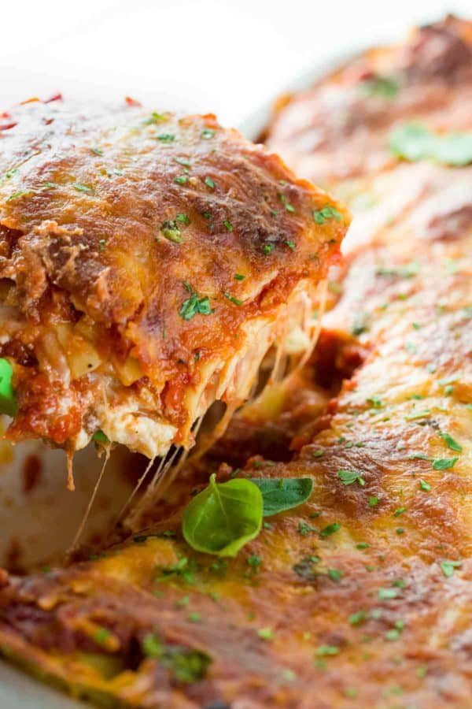

Yum Yum Lasagna

Lasagna is the ultimate Italian comfort food and it’s the perfect make-ahead meal to enjoy on busy weekdays or even laid back weekends. Tender pasta noodles are layered with a delicious meat sauce, creamy ricotta, and mozzarella.
When a hot and bubbly baking dish filled with homemade lasagna hits the dinner table, it’s guaranteed to disappear fast! Multiple layers of noodles, cheese, and sauce are the best kind of edible architecture. I like to treat my Italian family with this comfort food because it always brings smiles at the end of a long day.
Using convenient pantry staples makes preparation easy, while effortlessly bumping up the flavor of the meat sauce and cheese layers. Ripe canned tomatoes and dried herbs help to instantly boost the flavor. If you’re in a pinch for time, make the layers in advance and bake when you’re ready to serve, it’s a game-changer!
Ingredients
- 9 lasagna noodles
- ¼ cup margarine
- ¼ cup all-purpose flour
- ½ teaspoon salt
- ¼ teaspoon ground black pepper
- 1 cup milk
- ½ cup vegetable broth, or as needed
- ½ cup grated Parmesan cheese
- 1 cup shredded mozzarella cheese
Preparation Steps
- Bring a large pot of lightly salted water to a boil. Cook lasagna in the boiling water, stirring occasionally until cooked through but firm to the bite, about 8 minutes. Drain.
- Preheat oven to 375 degrees F (190 degrees C).
- Melt margarine in a skillet over low heat; cook and stir flour, salt, and pepper into the melted margarine until smooth and bubbling, 2 to 3 minutes. Add milk and broth into flour mixture, stirring constantly; bring sauce to a boil. Stir wine into sauce and remove from heat. Stir Parmesan cheese into sauce until smooth.
- Whisk ricotta cheese, egg, and egg white together in a bowl.
- Heat olive oil in a skillet over medium-high heat; saute carrots, zucchini, and spinach until just becoming tender, 5 to 10 minutes. Stir vegetable mixture into ricotta mixture.
- Layer 1/3 the lasagna noodles, 1/3 the ricotta-vegetable mixture, and 1/3 the Parmesan sauce in a 9x13-inch baking dish; repeat layering 2 more times with remaining ingredients, ending with a layer of mozzarella cheese.
- Bake in the preheated oven until cheese is lightly browned and bubbling, about 30 minutes.